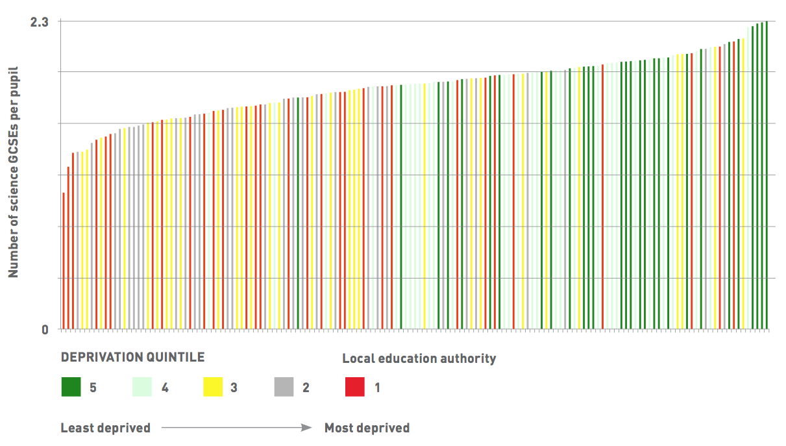

United Kingdom's Open Public Services Network
New Strategies to Close the Data Gap
by Becky Hogge
The aim of the project was to demonstrate that public service transparency, driven by open data can “support a richer and more multi-dimensional approach to accountability than is offered by the current exam results league tables and Ofsted report-based regime”8. OPSN believes that data on schools and other public services represents “a multitude of truths9” that are not captured by current accountability frameworks. In its report OPSN quotes research that shows that such frameworks have “relatively little influence on the choices people make”10. “What good looks like varies against what you’re trying to measure11,” says Charlotte Alldritt. Different service users want to ask different questions to evaluate public services according to their own contexts.
For the 2013 report, OPSN convened a panel of experts representing qualifications authorities, school governors, pupils, teachers, and others. Together they devised a set of features they thought represented the way parents thought about the quality of education offered by schools: facilities; climate of learning; curriculum and pupil outcomes. OPSN then set about interpreting the data sources available to see how fit they were at addressing variations in these features. The data they came up with included new measures, such as rates of uptake of different subjects at GCSE. This data was republished by the Guardian on a postcode-driven searchable portal that allowed parents to compare local schools, the Guardian GCSE schools guide12.
It was during the research for Empowering Parents, Improving Accountability that Roger Taylor says he began to notice how many schools were not showing GCSE results for challenging subjects like the individual sciences (Physics, Biology, and Chemistry—commonly shortened to “triple science”) and modern languages. This observation led to the second of OPSN’s education research projects, using National Pupil Database data to ascertain which schools were not offering these subjects across England.
The report identified six LEAs where 30% or more of schools had no pupils enrolled in triple science: Medway, Slough, Newcastle upon Tyne, City of Kingston Upon Hull, Knowsley, and North East Lincolnshire. In only 41 of England’s 151 LEAs did all schools have at least one pupil enrolled in triple science (see Figure 7).

Figure 7: Access to triple sciences across English schools, taken from Lack of Options report. Copyright OPSN. Reproduced with permission.
The report then shifted its focus to all science GCSEs (including dual-award science, which covers subjects in biology, physics, and chemistry and is worth two GCSEs). This uncovered one LEA where some pupils were taking no science subjects at all (Knowsley). Mapping this data against deprivation data (available as open data on data.gov.uk) showed—with notable exceptions—that there was some relationship (see Figure 8). The report concluded that “fewer science GCSEs per pupil tend to occur in poorer areas” 13.

Figure 8: Number of Science GCSEs per pupil in LEAs coloured by deprivation quintile, taken from Lack of Options report. Copyright OPSN. Reproduced with permission.
Read MoreLearn about our methodology
Read Next
United Kingdom's OpenCorporates
Reference
1 Prime Minister’s Office. (2010, May 29). PM’s podcast on transparency. Retrieved from gov.uk: https://www.gov.uk/government/news/pms-podcast-on-transparency
2 digitalhealth.net. (2007, July 18). DH blasted for ‘back room deal’ with Dr Foster. Retrieved from digitalhealth.net: http://www.digitalhealth.net/news/22819/
3 Open Public Services Network. (2013, September). Empowering Parents, Improving Accountability. Retrieved from https://www.thersa.org/discover/publications-and-articles/reports/empowering-parents-improving-accountability/
4 Open Public Services Network. (2013, September). Empowering Parents, Improving Accountability. Retrieved from https://www.thersa.org/discover/publications-and-articles/reports/empowering-parents-improving-accountability/
5 Open Public Services Network. (2015, February). Lack of options: how a pupil’s academic choices are affected by where they live. Retrieved from https://www.thersa.org/discover/publications-and-articles/reports/lack-of-options-how-a-pupils-academic-choices-are-affected-by-where-they-live/
6 Department for Education. (2013). The national pupil database: User guide. Retrieved from https://www.gov.uk/government/uploads/system/uploads/attachment_data/file/261189/NPD_User_Guide.pdf
7 Department for Education. (2013). The national pupil database: User guide. Retrieved from https://www.gov.uk/government/uploads/system/uploads/attachment_data/file/261189/NPD_User_Guide.pdf
8 Open Public Services Network. (2013, September). Empowering Parents, Improving Accountability. Retrieved from https://www.thersa.org/discover/publications-and-articles/reports/empowering-parents-improving-accountability/
9 Interview, Charlotte Alldritt, Director, Open Public Services Network.
10 Hansen, K., Joshi, H., & Dex, S. (2010). Children of the 21st century: The first five years. Policy Press.
11 Interview, Charlotte Alldritt, Director, Open Public Services Network.
12 Adams, R. (2013, September 11). School database lets parents compare GCSE results by subject. Retrieved from The Guardian: http://www.theguardian.com/education/2013/sep/11/school-database-gcse-results-subject
13 Open Public Services Network. (2015, February). Lack of options: how a pupil’s academic choices are affected by where they live. Retrieved from https://www.thersa.org/discover/publications-and-articles/reports/lack-of-options-how-a-pupils-academic-choices-are-affected-by-where-they-live/
14 Cabinet Office. (2013, January 24). Prime Minister David Cameron’s speech to the World Economic Forum in Davos. Retrieved from https://www.gov.uk/government/speeches/prime-minister-david-camerons-speech-to-the-world-economic-forum-in-davos
15 World Bank. (n.d.). Education Sector uses of open data. Retrieved September 30, 2015, from World Bank: https://finances.worldbank.org/Reference/Education-Sector-uses-of-open-data/grcz-ymf2
16 Coughlan, S. (2015, February 11). Pupils in some areas are not offered ‘vital’ GCSEs. Retrieved from BBC News: http://www.bbc.co.uk/news/education-30983083
17 Times Educational Supplement. (2015, February 11). Pupils in poor areas denied chance to study science and foreign languages, says study. Retrieved from Times Educational Supplement: https://www.tes.co.uk/news/school-news/breaking-news/pupils-poor-areas-denied-chance-study-science-and-foreign-languages
18 Nottingham Post. (2015, February 12). Nottinghamshire pupils ‘miss out on GCSE subjects’. Retrieved from Nottingham Post: http://www.nottinghampost.com/Pupils-miss-GCSE-subjects/story-26013138-detail/story.html
19 Bradford Telegraph and Argus. (2015, February 11). Fears over job prospects of Bradford pupils who fail to study languages at GCSE. Retrieved from Bradford Telegraph and Argus: http://www.thetelegraphandargus.co.uk/news/local/localbrad/11786686.Fears_over_job_prospects_of_Bradford_pupils_who_fail_to_study_languages_at_GCSE/
20 Sampson, L. (2015, February 11). Middlesbrough a ‘subject desert’: Pupils unlikely to take exams that could be vital to job prospects. Retrieved from Gazette Live: http://www.gazettelive.co.uk/news/teesside-news/middlesbrough-subject-desert-pupils-not-8626289
21 Harding, E. (2015, February 10). Schools ‘stop poorer GCSE pupils taking hard subjects’: Ploy to boost league rankings by denying access to exams including sciences. Retrieved from Daily Mail: http://www.dailymail.co.uk/news/article-2948393/Schools-stop-poorer-GCSE-pupils-taking-hard-subjects-boost-league-rankings-denying-access-exams-including-sciences.html
22 Skidmore, C. (2015, March 24). HC Deb, 24 March 2015, c1324. Retrieved from TheyWorkForYou.com: http://www.theyworkforyou.com/debates/?id=2015-03-24a.1324.2
23 For an interesting take on the role of evidence in policymaking, see Maybin, J. (2013, April 16). Experience-based policymaking. Retrieved from Institute for Government: http://www.instituteforgovernment.org.uk/blog/5671/experience-based-policymaking/
24 Gray, J., Bounegru, L., & Chambers, L. (2012). The Data Journalism Handbook: How Journalists Can Use Data to Improve the News. O’Reilly.
25 Interview, Roger Taylor, Chair, Open Public Services Network
26 Prime Minister’s Office. (2010, May 29). PM’s podcast on transparency. Retrieved from gov.uk: https://www.gov.uk/government/news/pms-podcast-on-transparency
27 Thwaites, E. (2012, December 06). Prescription Savings Worth Millions Identified by ODI incubated company. Retrieved from Open Data Institute: https://theodi.org/news/prescription-savings-worth-millions-identified-odi-incubated-company
28 Wheeler, B. (2012, November 9). Government online data ignored by ‘armchair auditors’. Retrieved from BBC News: http://www.bbc.co.uk/news/uk-politics-20221398
29 Freeguard, G., Munro, R., & Andrews, E. (2015, April). Whitehall Monitor: Deep Impact? Retrieved from Institute for Government: http://www.instituteforgovernment.org.uk/publications/whitehall-monitor-deep-impact
30 Interview, Roger Taylor, Chair, Open Public Services Network
31 Interview, Roger Taylor, Chair, Open Public Services Network
32 Interview, Roger Taylor, Chair, Open Public Services Network
33 Interview, Roger Taylor, Chair, Open Public Services Network
34 Interview, Roger Taylor, Chair, Open Public Services Network
35 Interview, Roger Taylor, Chair, Open Public Services Network
36 For more on this see Conclusion. The contentious case of care.data, a scheme to centralise and share medical records previously held by individuals’ GPs that collapsed under the weight of public criticism in 2014, has shown at a minimum that policymakers should prioritise communicating with the public clearly about how their data will be shared and with whom, and actively seek, rather than assume, the public’s consent.